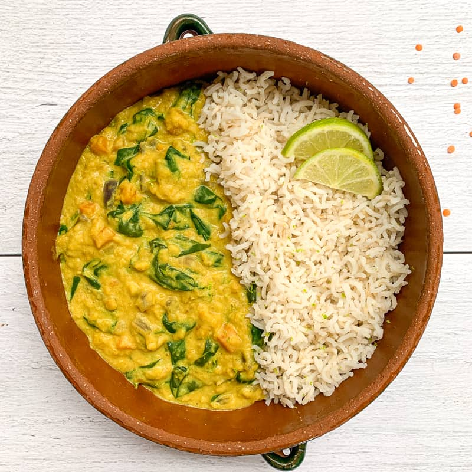

dal de lentilles corail

La recette consiste en plat sain de lentilles.
Il s'agit d'une recette riche en protéines et équilibrée.
- lentille rouges
- tomates émincées
- sauce curry
- oignon
STEPS
- Faites revenir les tomates émincées et les oignons.
- Ajoutez les lentilles et de l'eau à hauteur des ingrédients.
- Ajoutez la sauce curry.
- Laissez mijoter.